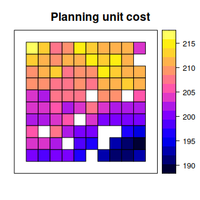
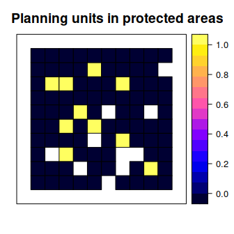
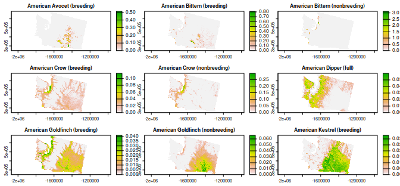
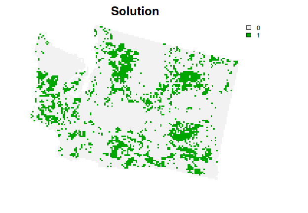
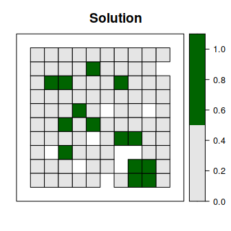
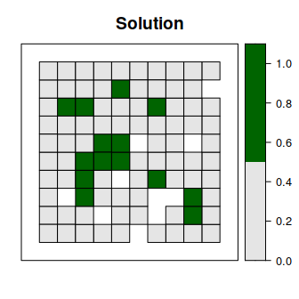
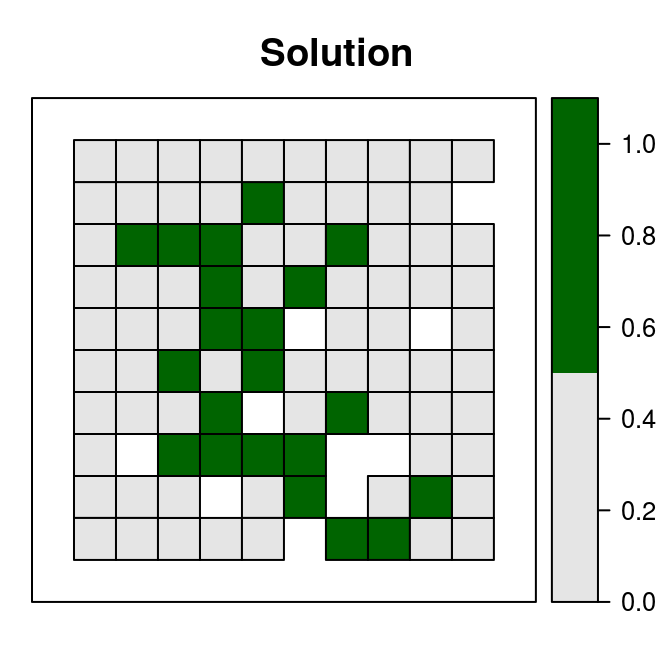
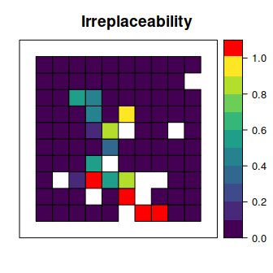

Systematic Conservation Prioritization in R
The prioritizr R package uses mixed integer linear programming (MILP) techniques to provide a flexible interface for building and solving conservation planning problems. It supports a broad range of objectives, constraints, and penalties that can be used to custom-tailor conservation planning problems to the specific needs of a conservation planning exercise. Once built, conservation planning problems can be solved using a variety of commercial and open-source exact algorithm solvers. In contrast to the algorithms conventionally used to solve conservation problems, such as heuristics or simulated annealing, the exact algorithms used here are guaranteed to find optimal solutions. Furthermore, conservation problems can be constructed to optimize the spatial allocation of different management actions or zones, meaning that conservation practitioners can identify solutions that benefit multiple stakeholders. Finally, this package has the functionality to read input data formatted for the Marxan conservation planning program, and find much cheaper solutions in a much shorter period of time than Marxan.
Installation
The latest official version of the prioritizr R package can be installed from the Comprehensive R Archive Network (CRAN) using the following R code.
install.packages("prioritizr", repos = "https://cran.rstudio.com/")Alternatively, the latest development version can be installed from GitHub using the following code. Please note that while developmental versions may contain additional features not present in the official version, they may also contain coding errors.
if (!require(remotes)) install.packages("remotes")
remotes::install_github("prioritizr/prioritizr")Citation
Please cite the prioritizr R package when using it in publications. To cite the latest official version, please use:
Hanson JO, Schuster R, Morrell N, Strimas-Mackey M, Edwards BPM, Watts ME, Arcese P, Bennett J, Possingham HP (2022). prioritizr: Systematic Conservation Prioritization in R. R package version 7.2.2. Available at https://CRAN.R-project.org/package=prioritizr.
Alternatively, to cite the latest development version, please use:
Hanson JO, Schuster R, Morrell N, Strimas-Mackey M, Edwards BPM, Watts ME, Arcese P, Bennett J, Possingham HP (2022). prioritizr: Systematic Conservation Prioritization in R. R package version 7.2.2. Available at https://github.com/prioritizr/prioritizr.
Additionally, we keep a record of publications that use the prioritizr R package. If you use this package in any reports or publications, please file an issue on GitHub so we can add it to the record.
Usage
Here we will provide a short example showing how the prioritizr R package can be used to build and solve conservation problems. For brevity, we will use one of the built-in simulated datasets that is distributed with the package. First, we will load the prioritizr R package.
# load package
library(prioritizr)We will use the sim_pu_polygons object to represent our planning units. Although the prioritizr R can support many different types of planning unit data, here our planning units are represented as polygons in a spatial vector format (i.e. SpatialPolygonsDataFrame). Each polygon represents a different planning unit and we have 90 planning units in total. The attribute table associated with this dataset contains information describing the acquisition cost of each planning (“cost” column), and a value indicating if the unit is already located in protected area (“locked_in” column). Let’s explore the planning unit data.
# load planning unit data
data(sim_pu_polygons)
# show the first 6 rows in the attribute table
head(sim_pu_polygons@data)## cost locked_in locked_out
## 1 215.8638 FALSE FALSE
## 2 212.7823 FALSE FALSE
## 3 207.4962 FALSE FALSE
## 4 208.9322 FALSE TRUE
## 5 214.0419 FALSE FALSE
## 6 213.7636 FALSE FALSE
# plot the planning units and color them according to acquisition cost
spplot(sim_pu_polygons, "cost", main = "Planning unit cost",
xlim = c(-0.1, 1.1), ylim = c(-0.1, 1.1))
# plot the planning units and show which planning units are inside protected
# areas (colored in yellow)
spplot(sim_pu_polygons, "locked_in", main = "Planning units in protected areas",
xlim = c(-0.1, 1.1), ylim = c(-0.1, 1.1))
Conservation features are represented using a stack of raster data (i.e. RasterStack objects). A RasterStack represents a collection of RasterLayers with the same spatial properties (i.e. spatial extent, coordinate system, dimensionality, and resolution). Each RasterLayer in the stack describes the distribution of a conservation feature.
In our example, the sim_features object is a RasterStack object that contains 5 layers. Each RasterLayer describes the distribution of a species. Specifically, the pixel values denote the proportion of suitable habitat across different areas inside the study area. For a given layer, pixels with a value of one are comprised entirely of suitable habitat for the feature, and pixels with a value of zero contain no suitable habitat.
# load feature data
data(sim_features)
# plot the distribution of suitable habitat for each feature
plot(sim_features, main = paste("Feature", seq_len(nlayers(sim_features))),
nr = 2)
Let’s say that we want to develop a reserve network that will secure 15% of the distribution for each feature in the study area for minimal cost. In this planning scenario, we can either purchase all of the land inside a given planning unit, or none of the land inside a given planning unit. Thus we will create a new problem that will use a minimum set objective (add_min_set_objective), with relative targets of 15% (add_relative_targets), binary decisions (add_binary_decisions), and specify that we want to want optimal solutions from the best solver installed on our system (add_default_solver).
# create problem
p1 <- problem(sim_pu_polygons, features = sim_features,
cost_column = "cost") %>%
add_min_set_objective() %>%
add_relative_targets(0.15) %>%
add_binary_decisions() %>%
add_default_solver(gap = 0)After we have built a problem, we can solve it to obtain a solution. Since we have not specified the method used to solve the problem, prioritizr will automatically use the best solver currently installed. It is strongly encouraged to install the Gurobi software suite and the gurobi R package to solve problems quickly, for more information on this please refer to the Gurobi Installation Guide
# solve the problem
s1 <- solve(p1)## Gurobi Optimizer version 9.5.2 build v9.5.2rc0 (linux64)
## Thread count: 4 physical cores, 8 logical processors, using up to 1 threads
## Optimize a model with 5 rows, 90 columns and 450 nonzeros
## Model fingerprint: 0x53cdb40f
## Variable types: 0 continuous, 90 integer (90 binary)
## Coefficient statistics:
## Matrix range [2e-01, 9e-01]
## Objective range [2e+02, 2e+02]
## Bounds range [1e+00, 1e+00]
## RHS range [4e+00, 1e+01]
## Found heuristic solution: objective 3139.8880309
## Presolve time: 0.00s
## Presolved: 5 rows, 90 columns, 450 nonzeros
## Variable types: 0 continuous, 90 integer (90 binary)
## Found heuristic solution: objective 2929.4929229
## Root relaxation presolved: 5 rows, 90 columns, 450 nonzeros
##
##
## Root relaxation: objective 2.611170e+03, 13 iterations, 0.00 seconds (0.00 work units)
##
## Nodes | Current Node | Objective Bounds | Work
## Expl Unexpl | Obj Depth IntInf | Incumbent BestBd Gap | It/Node Time
##
## 0 0 2611.17006 0 4 2929.49292 2611.17006 10.9% - 0s
## H 0 0 2780.0314635 2611.17006 6.07% - 0s
## H 0 0 2761.3302091 2611.17006 5.44% - 0s
## H 0 0 2747.3774616 2611.17006 4.96% - 0s
## 0 0 2611.74321 0 5 2747.37746 2611.74321 4.94% - 0s
## 0 0 2611.77869 0 6 2747.37746 2611.77869 4.94% - 0s
## 0 0 2611.89458 0 7 2747.37746 2611.89458 4.93% - 0s
## 0 0 2611.92840 0 8 2747.37746 2611.92840 4.93% - 0s
## 0 0 2611.95890 0 8 2747.37746 2611.95890 4.93% - 0s
## 0 0 2611.99567 0 8 2747.37746 2611.99567 4.93% - 0s
## 0 0 2612.19459 0 8 2747.37746 2612.19459 4.92% - 0s
## 0 0 2612.26426 0 9 2747.37746 2612.26426 4.92% - 0s
## 0 0 2612.28612 0 10 2747.37746 2612.28612 4.92% - 0s
## 0 0 2612.30057 0 10 2747.37746 2612.30057 4.92% - 0s
## 0 0 2612.32679 0 10 2747.37746 2612.32679 4.92% - 0s
## 0 0 2612.33532 0 10 2747.37746 2612.33532 4.92% - 0s
## 0 0 2612.39836 0 9 2747.37746 2612.39836 4.91% - 0s
## 0 0 2612.42417 0 10 2747.37746 2612.42417 4.91% - 0s
## 0 0 2612.43417 0 11 2747.37746 2612.43417 4.91% - 0s
## 0 0 2612.49918 0 10 2747.37746 2612.49918 4.91% - 0s
## 0 0 2612.50875 0 10 2747.37746 2612.50875 4.91% - 0s
## 0 2 2612.81540 0 10 2747.37746 2612.81540 4.90% - 0s
## 28310 12843 2624.27040 53 3 2747.37746 2620.09309 4.63% 1.6 5s
## H88635 5604 2627.6389306 2622.33208 0.20% 1.6 8s
##
## Cutting planes:
## MIR: 6
## StrongCG: 2
## Flow cover: 3
##
## Explored 108086 nodes (186594 simplex iterations) in 9.71 seconds (2.28 work units)
## Thread count was 1 (of 8 available processors)
##
## Solution count 6: 2627.64 2747.38 2761.33 ... 3139.89
##
## Optimal solution found (tolerance 0.00e+00)
## Best objective 2.627638930618e+03, best bound 2.627638930618e+03, gap 0.0000%## solution_1
## 2627.639## solution_1
## 9.763## solution_1
## "OPTIMAL"
# plot the solution
spplot(s1, "solution_1", main = "Solution", at = c(0, 0.5, 1.1),
col.regions = c("grey90", "darkgreen"), xlim = c(-0.1, 1.1),
ylim = c(-0.1, 1.1))
To evaluate the performance of the solution, we can calculate summary statistics.
# calculate solution cost
print(eval_cost_summary(p1, s1[, "solution_1"]), width = Inf)## # A tibble: 1 × 2
## summary cost
## <chr> <dbl>
## 1 overall 2628.
# calculate information describing how well the targets are met by the solution
print(eval_target_coverage_summary(p1, s1[, "solution_1"]), width = Inf)## # A tibble: 5 × 9
## feature met total_amount absolute_target absolute_held absolute_shortfall
## <chr> <lgl> <dbl> <dbl> <dbl> <dbl>
## 1 layer.1 TRUE 74.5 11.2 11.5 0
## 2 layer.2 TRUE 28.1 4.21 4.22 0
## 3 layer.3 TRUE 64.9 9.73 9.75 0
## 4 layer.4 TRUE 38.2 5.73 5.76 0
## 5 layer.5 TRUE 50.7 7.60 7.60 0
## relative_target relative_held relative_shortfall
## <dbl> <dbl> <dbl>
## 1 0.15 0.155 0
## 2 0.15 0.150 0
## 3 0.15 0.150 0
## 4 0.15 0.151 0
## 5 0.15 0.150 0Although this solution adequately conserves each feature, it is inefficient because it does not consider the fact some of the planning units are already inside protected areas. Since our planning unit data contains information on which planning units are already inside protected areas (in the "locked_in" column of the attribute table), we can add constraints to ensure they are prioritized in the solution (add_locked_in_constraints).
# create new problem with locked in constraints added to it
p2 <- p1 %>%
add_locked_in_constraints("locked_in")
# solve the problem
s2 <- solve(p2)## Gurobi Optimizer version 9.5.2 build v9.5.2rc0 (linux64)
## Thread count: 4 physical cores, 8 logical processors, using up to 1 threads
## Optimize a model with 5 rows, 90 columns and 450 nonzeros
## Model fingerprint: 0x7d308c9f
## Variable types: 0 continuous, 90 integer (90 binary)
## Coefficient statistics:
## Matrix range [2e-01, 9e-01]
## Objective range [2e+02, 2e+02]
## Bounds range [1e+00, 1e+00]
## RHS range [4e+00, 1e+01]
## Found heuristic solution: objective 3027.6970854
## Presolve removed 0 rows and 10 columns
## Presolve time: 0.00s
## Presolved: 5 rows, 80 columns, 400 nonzeros
## Variable types: 0 continuous, 80 integer (80 binary)
## Found heuristic solution: objective 3021.2805888
## Root relaxation presolved: 5 rows, 80 columns, 400 nonzeros
##
##
## Root relaxation: objective 2.754438e+03, 12 iterations, 0.00 seconds (0.00 work units)
##
## Nodes | Current Node | Objective Bounds | Work
## Expl Unexpl | Obj Depth IntInf | Incumbent BestBd Gap | It/Node Time
##
## 0 0 2754.43795 0 4 3021.28059 2754.43795 8.83% - 0s
## H 0 0 2839.1208991 2754.43795 2.98% - 0s
## 0 0 2754.44157 0 5 2839.12090 2754.44157 2.98% - 0s
## 0 0 2758.48548 0 5 2839.12090 2758.48548 2.84% - 0s
## 0 0 2758.91527 0 6 2839.12090 2758.91527 2.83% - 0s
## 0 0 2759.22179 0 7 2839.12090 2759.22179 2.81% - 0s
## 0 0 2761.07832 0 6 2839.12090 2761.07832 2.75% - 0s
## 0 0 2761.43633 0 7 2839.12090 2761.43633 2.74% - 0s
## 0 0 2761.45454 0 8 2839.12090 2761.45454 2.74% - 0s
## 0 0 2761.46314 0 9 2839.12090 2761.46314 2.74% - 0s
## 0 0 2761.49423 0 10 2839.12090 2761.49423 2.73% - 0s
## 0 0 2761.65657 0 10 2839.12090 2761.65657 2.73% - 0s
## 0 0 2762.39851 0 10 2839.12090 2762.39851 2.70% - 0s
## 0 0 2762.63943 0 9 2839.12090 2762.63943 2.69% - 0s
## 0 0 2763.80043 0 7 2839.12090 2763.80043 2.65% - 0s
## 0 0 2763.80469 0 8 2839.12090 2763.80469 2.65% - 0s
## 0 0 2763.83234 0 8 2839.12090 2763.83234 2.65% - 0s
## 0 0 2763.88681 0 8 2839.12090 2763.88681 2.65% - 0s
## 0 0 2763.89889 0 9 2839.12090 2763.89889 2.65% - 0s
## 0 0 2764.42236 0 9 2839.12090 2764.42236 2.63% - 0s
## 0 0 2764.50511 0 10 2839.12090 2764.50511 2.63% - 0s
## 0 0 2764.71972 0 11 2839.12090 2764.71972 2.62% - 0s
## 0 0 2764.92447 0 11 2839.12090 2764.92447 2.61% - 0s
## 0 0 2765.35561 0 11 2839.12090 2765.35561 2.60% - 0s
## 0 0 2765.37938 0 12 2839.12090 2765.37938 2.60% - 0s
## 0 0 2765.56448 0 12 2839.12090 2765.56448 2.59% - 0s
## 0 0 2765.66439 0 13 2839.12090 2765.66439 2.59% - 0s
## 0 0 2765.95837 0 13 2839.12090 2765.95837 2.58% - 0s
## 0 0 2766.11567 0 13 2839.12090 2766.11567 2.57% - 0s
## 0 0 2766.24843 0 11 2839.12090 2766.24843 2.57% - 0s
## 0 0 2766.27073 0 12 2839.12090 2766.27073 2.57% - 0s
## 0 0 2766.27073 0 13 2839.12090 2766.27073 2.57% - 0s
## 0 0 2766.27073 0 13 2839.12090 2766.27073 2.57% - 0s
## 0 2 2766.27077 0 13 2839.12090 2766.27077 2.57% - 0s
## * 1023 390 42 2838.2640999 2786.00750 1.84% 2.6 0s
##
## Cutting planes:
## Gomory: 2
## MIR: 4
## Flow cover: 1
##
## Explored 10370 nodes (24553 simplex iterations) in 2.66 seconds (1.01 work units)
## Thread count was 1 (of 8 available processors)
##
## Solution count 5: 2838.26 2839.12 3021.28 ... 3027.7
##
## Optimal solution found (tolerance 0.00e+00)
## Best objective 2.838264099909e+03, best bound 2.838264099909e+03, gap 0.0000%
# plot the solution
spplot(s2, "solution_1", main = "Solution", at = c(0, 0.5, 1.1),
col.regions = c("grey90", "darkgreen"), xlim = c(-0.1, 1.1),
ylim = c(-0.1, 1.1))
This solution is an improvement over the previous solution. However, it is also highly fragmented. As a consequence, this solution may be associated with increased management costs and the species in this scenario may not benefit substantially from this solution due to edge effects. We can further modify the problem by adding penalties that punish overly fragmented solutions (add_boundary_penalties). Here we will use a penalty factor of 300 (i.e. boundary length modifier; BLM), and an edge factor of 50% so that planning units that occur outer edge of the study area are not overly penalized.
# create new problem with boundary penalties added to it
p3 <- p2 %>%
add_boundary_penalties(penalty = 300, edge_factor = 0.5)
# solve the problem
s3 <- solve(p3)## Gurobi Optimizer version 9.5.2 build v9.5.2rc0 (linux64)
## Thread count: 4 physical cores, 8 logical processors, using up to 1 threads
## Optimize a model with 293 rows, 234 columns and 1026 nonzeros
## Model fingerprint: 0xf2e8dbb5
## Variable types: 0 continuous, 234 integer (234 binary)
## Coefficient statistics:
## Matrix range [2e-01, 1e+00]
## Objective range [6e+01, 3e+02]
## Bounds range [1e+00, 1e+00]
## RHS range [4e+00, 1e+01]
## Found heuristic solution: objective 19567.196992
## Found heuristic solution: objective 4347.6970854
## Presolve removed 72 rows and 46 columns
## Presolve time: 0.01s
## Presolved: 221 rows, 188 columns, 832 nonzeros
## Variable types: 0 continuous, 188 integer (188 binary)
## Found heuristic solution: objective 4118.0739655
## Root relaxation presolved: 221 rows, 188 columns, 832 nonzeros
##
##
## Root relaxation: objective 3.862929e+03, 120 iterations, 0.00 seconds (0.00 work units)
##
## Nodes | Current Node | Objective Bounds | Work
## Expl Unexpl | Obj Depth IntInf | Incumbent BestBd Gap | It/Node Time
##
## 0 0 3862.92935 0 65 4118.07397 3862.92935 6.20% - 0s
## H 0 0 4045.3056552 3862.92935 4.51% - 0s
## H 0 0 3951.7528370 3862.92935 2.25% - 0s
## 0 0 3889.41282 0 41 3951.75284 3889.41282 1.58% - 0s
## H 0 0 3939.6015361 3889.41282 1.27% - 0s
## 0 0 3892.64818 0 63 3939.60154 3892.64818 1.19% - 0s
## 0 0 3896.53163 0 85 3939.60154 3896.53163 1.09% - 0s
## 0 0 3910.26013 0 8 3939.60154 3910.26013 0.74% - 0s
## 0 0 3910.58042 0 9 3939.60154 3910.58042 0.74% - 0s
## 0 0 3915.80408 0 6 3939.60154 3915.80408 0.60% - 0s
## 0 0 cutoff 0 3939.60154 3939.60154 0.00% - 0s
##
## Cutting planes:
## Gomory: 1
## Cover: 2
## GUB cover: 1
## Zero half: 1
##
## Explored 1 nodes (220 simplex iterations) in 0.08 seconds (0.02 work units)
## Thread count was 1 (of 8 available processors)
##
## Solution count 7: 3939.6 3943.85 3951.75 ... 19567.2
##
## Optimal solution found (tolerance 0.00e+00)
## Best objective 3.939601536145e+03, best bound 3.939601536145e+03, gap 0.0000%
# plot the solution
spplot(s3, "solution_1", main = "Solution", at = c(0, 0.5, 1.1),
col.regions = c("grey90", "darkgreen"), xlim = c(-0.1, 1.1),
ylim = c(-0.1, 1.1))
This solution is even better then the previous solution. However, we are not finished yet. This solution does not maintain connectivity between reserves, and so species may have limited capacity to disperse throughout the solution. To avoid this, we can add contiguity constraints (add_contiguity_constraints).
# create new problem with contiguity constraints
p4 <- p3 %>%
add_contiguity_constraints()
# solve the problem
s4 <- solve(p4)## Gurobi Optimizer version 9.5.2 build v9.5.2rc0 (linux64)
## Thread count: 4 physical cores, 8 logical processors, using up to 1 threads
## Optimize a model with 654 rows, 506 columns and 2292 nonzeros
## Model fingerprint: 0xa7ea9b38
## Variable types: 0 continuous, 506 integer (506 binary)
## Coefficient statistics:
## Matrix range [2e-01, 1e+00]
## Objective range [6e+01, 3e+02]
## Bounds range [1e+00, 1e+00]
## RHS range [1e+00, 1e+01]
## Presolve removed 352 rows and 261 columns
## Presolve time: 0.03s
## Presolved: 302 rows, 245 columns, 678 nonzeros
## Variable types: 0 continuous, 245 integer (245 binary)
## Found heuristic solution: objective 7330.4055047
## Found heuristic solution: objective 6070.2074533
## Root relaxation presolved: 302 rows, 245 columns, 678 nonzeros
##
##
## Root relaxation: objective 5.489159e+03, 68 iterations, 0.00 seconds (0.00 work units)
##
## Nodes | Current Node | Objective Bounds | Work
## Expl Unexpl | Obj Depth IntInf | Incumbent BestBd Gap | It/Node Time
##
## 0 0 5489.15943 0 59 6070.20745 5489.15943 9.57% - 0s
## H 0 0 5858.4184908 5489.15943 6.30% - 0s
## 0 0 5738.84421 0 49 5858.41849 5738.84421 2.04% - 0s
## 0 0 5829.13269 0 8 5858.41849 5829.13269 0.50% - 0s
## 0 0 infeasible 0 5858.41849 5858.41849 0.00% - 0s
##
## Explored 1 nodes (193 simplex iterations) in 0.06 seconds (0.02 work units)
## Thread count was 1 (of 8 available processors)
##
## Solution count 4: 5858.42 5859.21 6070.21 7330.41
##
## Optimal solution found (tolerance 0.00e+00)
## Best objective 5.858418490821e+03, best bound 5.858418490821e+03, gap 0.0000%
# plot the solution
spplot(s4, "solution_1", main = "Solution", at = c(0, 0.5, 1.1),
col.regions = c("grey90", "darkgreen"), xlim = c(-0.1, 1.1),
ylim = c(-0.1, 1.1))
Now let’s explore which planning units selected in the prioritization are most important for meeting our targets as cost-effectively as possible. To achieve this, we will calculate importance (irreplaceability) scores using a version of the replacement cost method. Under this method, planning units with higher scores are more important for meeting the objective of our conservation planning problem than those with lower scores. Furthermore, planning units with infinite scores are irreplaceable—it is impossible to meet our targets without protecting these planning units. Note that we override the solver behavior in the code below to prevent lots of unnecessary text from being output.
# solve the problem
rc <- p4 %>%
add_default_solver(gap = 0, verbose = FALSE) %>%
eval_replacement_importance(s4[, "solution_1"])## Warning in res(x, ...): overwriting previously defined solver
# set infinite values as 1.09 so we can plot them
rc$rc[rc$rc > 100] <- 1.09
# plot the importance scores
# planning units that are truly irreplaceable are shown in red
spplot(rc, "rc", main = "Irreplaceability", xlim = c(-0.1, 1.1),
ylim = c(-0.1, 1.1), at = c(seq(0, 0.9, 0.1), 1.01, 1.1),
col.regions = c("#440154", "#482878", "#3E4A89", "#31688E", "#26828E",
"#1F9E89", "#35B779", "#6DCD59", "#B4DE2C", "#FDE725",
"#FF0000"))
This short example demonstrates how the prioritizr R package can be used to build and customize conservation problems, and then solve them to generate solutions. Although we explored just a few different functions for modifying a conservation problem, the package provides many functions for specifying objectives, constraints, penalties, and decision variables, so that you can build and custom-tailor conservation planning problems to suit your planning scenario.
Learning resources
The package website contains information on the prioritizr R package. Here you can find documentation for every function and built-in dataset, and news describing the updates in each package version. It also contains the following articles and tutorials.
- Getting started: Short tutorial on using the package.
- Package overview: Introduction to systematic conservation planning and a comprehensive overview of the package.
- Connectivity tutorial: Tutorial on incorporating connectivity into prioritizations.
- Calibrating trade-offs tutorial: Tutorial on running calibration analyses to satisfy multiple criteria.
- Management zones tutorial: Tutorial on incorporating multiple management zones and actions into prioritizations.
- Gurobi installation guide: Instructions for installing the Gurobi optimization suite for generating prioritizations.
- Solver benchmarks: Performance comparison of optimization solvers for generating prioritizations.
- Publication record: List of publications that have cited the package.
Additional resources can also be found in online repositories under the prioritizr organization. These resources include slides for talks and seminars about the package. Additionally, workshop materials are available too (e.g., the Massey University 2021 workshop and the PacMara 2019 workshop).
Getting help
If you have any questions about the prioritizr R package or suggestions for improving it, please post an issue on the code repository.